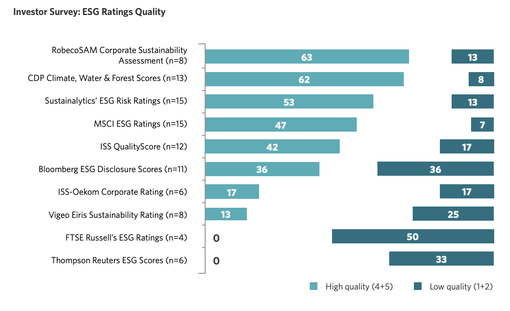

關於ESG，一篇文說清楚
2022-10-26
國際企業如微軟、Nike、NVIDIA、星巴克、賓士等等皆宣布將成為「淨零企業」，並且設定碳中和目標，連雀巢旗下的KitKat也宣布邁向「淨零」，未來KitKat皆是「碳中和巧克力」。究竟為何ESG在企業界忽地火熱？身為企業管理人的你應該要將ESG納入策略版圖嗎？這篇我們來聊聊ESG認證究竟有何玄機。
什麼是ESG認證？
ESG於2005年由聯合國提出，強調企業應當將環境、社會、治理三大面向的社會責任納入企業經營方針中，對社會與金融市場產生正向的影響。
ESG可以說是過去「CSR 企業社會責任」的具體版，除了強調企業應該負起社會責任，也進一步詳細劃分了社會責任的面向，而2015年，聯合國又進一步宣佈「2030永續發展目標」SDGs與ESG搭配使用，將社會責任又更細分成17個準則。
也因為具體且細分，ESG超越了過去CSR公關口號的本質，演變成投資機構用以評估企業體質的標準。ESG指標可以呈現財務報表看不出來的體質資訊，成為一種非會計的質化指標。
這項指標也經歷了時間驗證，2008年金融海嘯時世界首次發現ESG評等優良的公司受損程度較低，且香港中文大學商學院研究顯示，在2020疫情衝擊下，中國高ESG評分的股票跌幅較小，收益約高於低ESG組合10%。
國際上有哪些公信的ESG組織？公信度如何？
ESG評比最有爭議的點，就是每家評分機構做出來的分數差異可以非常大。評分差異大的主要原因，是不同機構注重的評比重點不見得相同，例如國際碳揭露計畫CDP完全只看「環境」類別分數，而MSCI則廣泛地涵蓋環境、社會、治理等三大面向。
根據SustainAbility報告Rate the Rater 2020指出，領先眾評比機構的前兩名分別是國際碳揭露計畫CDP（Carbon Disclosure Project）以及道瓊DJSI旗下的RobecoSAM，前者較受學術機構、NGO領域人士重視，後者更注重公司營運績效，評比結果受業界人士重視。
緊追其後的評比機構是Sustainalytics、MSCI、ISS、Bloomberg ESG Disclosure Scores等。

（資料來源：Rate the Rater 2020）
投資人怎樣看ESG評鑑？
- 於2020年第四季，ESG正式寫下發展上的分水嶺，流入ESG投資的資金創下1520億美元新高，資產管理規模也達到1.6兆美元水平，推出ESG產品多達196支。
- 而亞太地區的投資者也意識到：ESG不僅是一種讓人感覺良好的投資策略而已。它確實能帶來優於非ESG指數的績效表現。2021年是如此，預料2022年亦然。
- 2020年，認為ESG存在超額回報的機構投資者比重已超過六成（62%），2021年實施ESG的機構投資者比例已來到72%。
可以看出，投資人近年來漸漸地將ESG指標納入衡量標準中，ESG也漸漸脫離「綠色泡泡」的質疑。
然而，不同評比機構之間的分數混亂問題會影響投資人的信心。研究顯示評分機構的評分一致時，投資機構的持股比率來到23%，不一致時則是18%。
評級混亂程度越高，市場溢價連帶上升，對ESG敏感投資者的股市參與度與經濟利益都會下降。
而對評分混亂的問題，熟悉ESG市場的投資機構也有其應對方式。
根據Rate the Rater 2020對17家投資機構的調查，投資人通常綜合參考多份評比資料，針對不同報告有不同的解讀方法。例如CDP的評比報告投資人大多是看其「數據資料」而非最終分數；而MSCI、Sustainialytics這類報告則因評比涵蓋範圍廣，投資機構往往將這個分數作為綜合指標參考。
除了單純看ESG評比分數以外，投資機構也會直接與公司要求提供相關資料，如永續報告書、內部資訊揭露等。
可見ESG評比標準並非企業追求永續標章的「決一死戰」，針對企業體自身的永續實力下功夫，主動調查、提出清晰的永續報告，也可以提升企業的ESG印象與實力。

取得ESG憑證有哪些好處？
對於投資機構來說，整合財務與ESG評比的評估方法，可以有效優化投資的績效以及降低投資風險
對於企業家來說，有效的提升ESG評比，亦可以間接提高企業優勢。
這個企業優勢體現於外部與內部兩個面向。
從外部來看，ESG帶來的企業優勢是更高的投資興趣、良好公關信譽、碳費政策上路後產生的額外成本較低、碳排減量成效可作為碳信用出售等等。
（延伸閱讀：簡明碳辭典）
但更重要的，是展現於內部的企業優勢。ESG指標之所以受到重視，是因為評比分數高的機構其企業韌性較高，相對於低ESG分數企業而言具有更強的耐受度，可以承受自由市場不可預期的黑天鵝事件。
為何可以提升企業韌度？這是因為ESG實力提升，背後代表的其實是公司體質的整體提升。
如美國企業Walmart為了達成2025碳排減少18%的目標，詳細盤查後發現，供應商碳足跡佔了總碳排90%，因此必須從此著手。
當時沒有料到的是，為了減少碳排而加強聯繫供應商合作關係，竟然為了後續防範疫情所需的價值鏈精確資訊調查先做了超前部署，因此在疫情間承受的衝擊較小。
哈佛商學院（Harvard Business School）和美國道富銀行（State Street）一份聯合報告指出，企業致力於結合利害關係人，就是在向投資人發出「企業韌性」的訊號，從而得以在市場崩盤時，減少對企業股票價值的負面影響。
ESG就是花錢做公關？
而當越多公司投入進行ESG轉型，人們也漸漸發現致力於經營永續並不是傳統想像中的「賠錢做好事、積福德」，而是可以在長期帶來穩定回報的投資。
如BlackRock研究顧問公司認為，我們正處在永續觀念的典範轉移階段，企業經營人應該看的不是當下的世代對永續觀念的在乎程度，而是下一個世代對永續的看法；現在為了永續所投入的成本與努力，皆會因為未來世代更加在乎永續議題而有所回報。
範疇三盤查與減量的挑戰
取得ESG一大困難，是針對企業自身產品的「範疇三」進行盤查。
在盤查術語中，「範疇一」指產品生產過程所產生的直接碳排放、溫室氣體排放，例如工廠製程、畜牧牲口、機具燃料、員工通勤產生的碳排放。一般清點廠內機具運轉狀況即可盤查。
「範疇二」則是企業用電所產生的碳排放。一般收集電費帳單即可盤查。
最難以盤查的是「範疇三」，是產品生產鏈的上游如運輸配送、原物料生產，下游產品配送、使用過程碳排放、廢棄物處理等。因為範疇涵蓋整個價值鏈，盤查難度極高，據MSCI統計顯示只有18%的國際企業有針對範疇三提供資訊揭露。
但偏偏範疇三又是企業體碳足跡最巨量的組成，就CDP2021報告指出，企業體範疇三碳排放平均是範疇一與範疇二總和的11.4倍。
也就是說，若將上下游碳足跡都計算進去，產品上下游價值鏈產生的碳排放可能就佔了九成以上。
而因為不同產業的上下游組成差異很大，我們也很難有一套標準解法，只能case by case的去計算。
科技如何派上用場？
Combogic Tech.櫛構科技的專業就是用大數據來爬梳複雜資訊，對於這種難解的問題我們最愛了 <3
範疇三雖然隨著企業類別組成差異大，但其中一項跨類別的元素是「運輸」，不論人員或產品，任何企業都會需要用到運具。
從數據面看，全球範疇三碳排放中，約有15%來自運輸車輛。若以前述11.4倍計算，針對運具類別進行減量努力，可以產生相較於範疇一二總和1.71倍的放大效果，不輸為一個良好的槓桿施力點。
藉由結合非監督式AI技術與GIS圖層資訊，我們可以分析大量軌跡數據，不只是抓出軌跡中較高或較低的碳排偏離路徑，也解耦碳排因子和運具趨勢行為相關聯性。
用數據能夠看得更透徹，看得清楚，才能制定真正有效的減碳計畫。
追求永續，除了隨手關燈，你還可以做更多：）